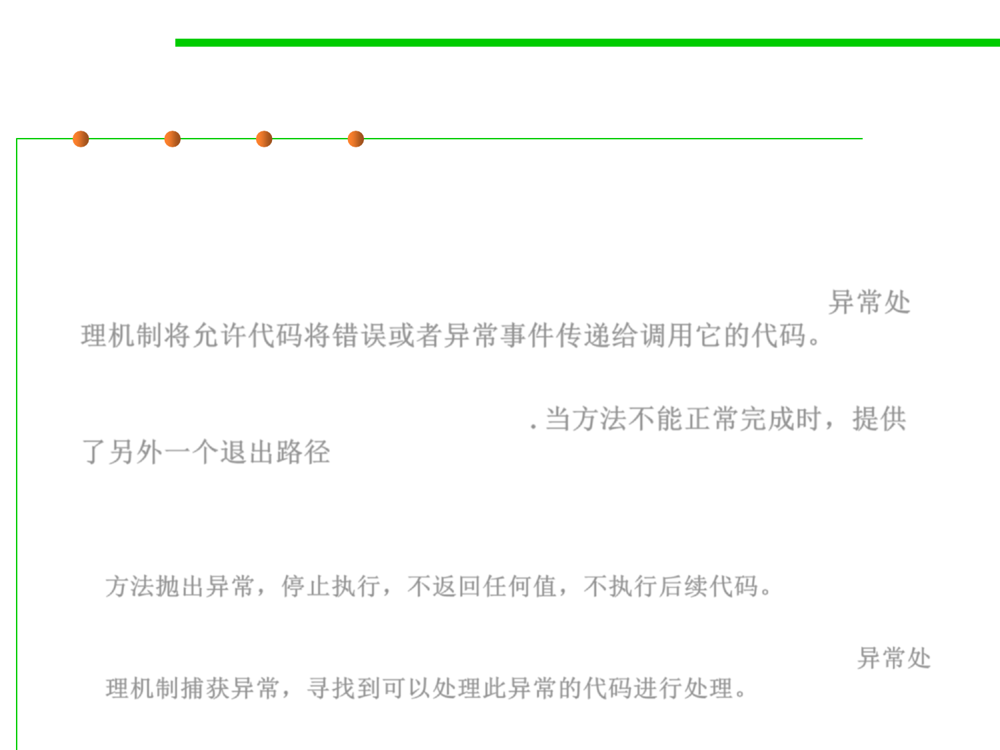

Exceptions
7.2 Error and Exception Handling
▪ An exception is an abnormal event that arises during the execution
of the program and disrupts the normal flow of the program.
▪ Exceptions mechanism are a specific means by which code can pass
along errors or exceptional events to the code that called it. 异常处
理机制将允许代码将错误或者异常事件传递给调用它的代码。
▪ Java allows every method an alternative exit path if it is unable to
complete its task in the normal way. 当方法不能正常完成时，提供
了另外一个退出路径
– In this situation, the method throws an object that encapsulates the error
information. The method exits immediately and does not return any value.
Moreover, execution does not resume at the code that called the method;
方法抛出异常，停止执行，不返回任何值，不执行后续代码。
– Instead, the exception-handling mechanism begins its search for an
exception handler that can deal with this particular error condition. 异常处
理机制捕获异常，寻找到可以处理此异常的代码进行处理。